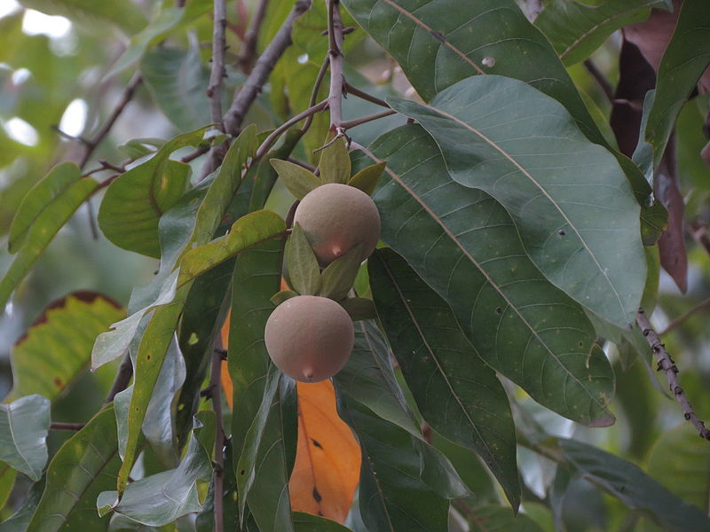
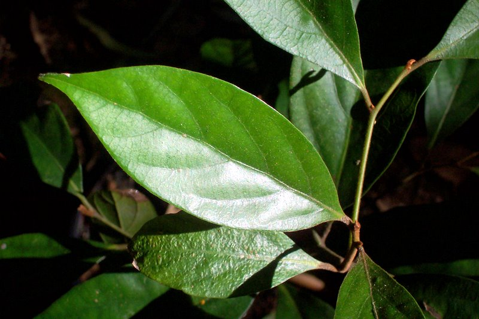

Location: Congesta species are commonly found in tropical and subtropical regions.
About Plant: Congesta is a tropical tree known for its beautiful and fragrant flowers, often used for ornamental purposes.

Jackson
Name: Vatica
Family: Dipterocarpaceae
Location: are found in Southeast Asian countries such as Malaysia and Indonesia.
About Plant: Vatica trees are known for their hardwood timber, and some species are critically endangered due to habitat loss and overharvesting.
Olivia
Name: Dipterocarpus
Family: Dipterocarpaceae
Location: Dipterocarpus trees are abundant in Southeast Asia, including countries like Malaysia, Indonesia, and the Philippines.
About Plant: Dipterocarpus is a diverse genus of tropical trees known for their valuable hardwood timber and their ecological importance in rainforests.
Liam
Name: Actinodaphne
Family: Lauraceae
Location: Actinodaphne species can be found in Southeast Asian countries such as Malaysia, Thailand, and Indonesia.
About Plant: Actinodaphne trees are known for their aromatic leaves and are sometimes used in traditional herbal medicine and culinary applications.

Noah
Name: Endiandra
Family: Lauraceae
Location: Endiandra trees are found in various regions of Australia, especially in rainforests and wet eucalyptus forests.
About Plant: Endiandra is a genus of evergreen trees with aromatic leaves, belonging to the laurel family, and often utilized for their timber.
Aiden
Name: Borneensis
Family: Dipterocarpaceae
Location: Borneensis orchids are primarily found on the island of Borneo, which is the third-largest island in the world
About Plant: Borneensis is a rare and exotic orchid species native to Borneo, appreciated for its unique and striking blooms.